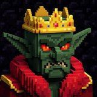
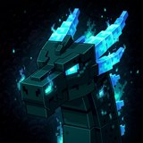
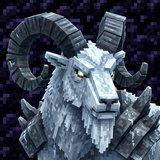
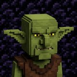
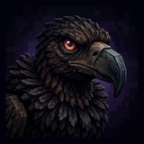
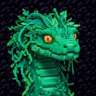
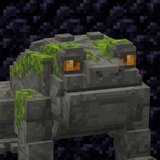

Goblin King
Dungeon Boss
250 Health
14–22 Damage
Stone Brick Dungeons
Powerful dungeon ruler found in stone-brick ruins. Uses heavy Cleave, Roar, and ground-shaking Slam attacks.
Drops: Gold Nuggets, Stone Essence

Soulfire Wyvern
Flying Boss-Class
250 Health
16 Damage + Soulfire
High Mountains (64+)
Giant dragon-sized predator soaring over high peaks. Breathes glowing blue Soulfire Clouds and dives down to swoop at players.
Drops: Dragon's Breath, Soul Lantern, Phantom Membrane, Cooked Relic Vulture, Relic Fiber, Gold Nuggets

Mutant Mountain Goat
Hostile
80 Health
12 Damage
High Peaks (80+)
Armored alpine beast found high up in the mountains. Charges aggressively at anyone climbing its territory.
Drops: Goat Horn, Mutton, Relic Fiber, Gold Nuggets

Goblin
Hostile
36 Health
6–9 Damage
Caves & Dungeons
Lurks inside underground caves and dungeon halls. Attacks with quick swings and heavier smash strikes.
Drops: Gold Nuggets, Stone Essence

Relic Vulture
Hostile
32 Health
6 Damage
Highlands (60–140)
Circles rocky ridges and swoops down on travelers. Hunt them for Vulture Meat, which cooks into great survival food.
Drops: Raw Relic Vulture, Feathers, Relic Fiber, Gold Nuggets

Twisting Vine Serpent
Peaceful Unless Attacked
24 Health
2 Damage + Nausea
Grassy Surface (58–82)
Neutral creature. Leaves you alone unless you hit it first—if provoked, its bite causes 8 seconds of Nausea.
Drops: Relic Fiber, Gold Nuggets

Boulder Rana & Wilds Rana
Peaceful Unless Attacked
80 Health
11 Damage
Surface & Caves (36–82)
Neutral stone frogs found in both biomes (mossy gray in Relic Overworld, pink-purple in Deep Wilds). Only fight back if attacked.
Drops: Relic Fiber, Gold Nuggets, Ochre or Pearlescent Froglight